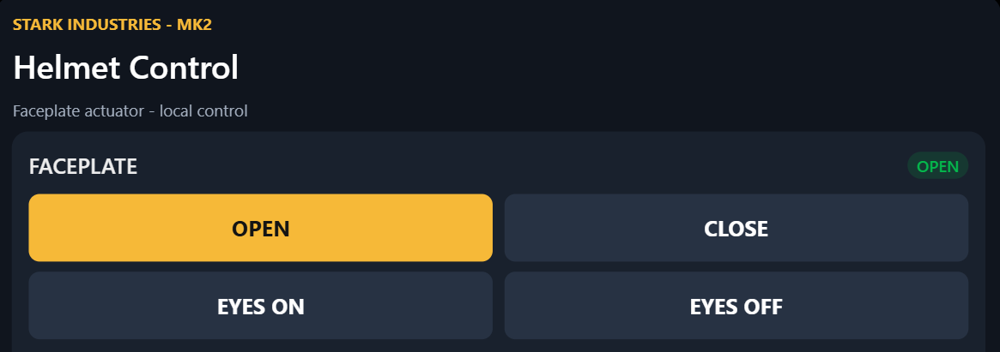

Ironman Helmet Build
A 3D-printed Iron Man helmet with an electronically controlled faceplate and illuminated eyes. An ESP32 microcontroller hosts a wireless access point, allowing the helmet's features to be controlled directly from a phone.
Mechanical Design
The mechanical components are based on designs shared by other makers on MakerWorld:
- Helmet design by GioBu: Iron Man MK2 Helmet
- Servo mechanism by Walsh3D: Iron Man Servo Pro
Electronics and Control
I designed and assembled the electronics using a solderable prototyping board, connecting two MG90S servos, two LEDs and an ESP32. The servos are controlled through GPIO pins 25 and 26, while the eye LEDs use pins 18 and 19 with individual 220 Ω resistors.
The ESP32 runs a Wi-Fi access point and a web interface for opening and closing the faceplate and switching the eye lights on and off. Initial testing is powered by a 5V power bank.
Web Control Interface
The helmet can be controlled wirelessly through a webpage hosted directly on the ESP32. Once connected to the helmet's Wi-Fi network, the user can operate the servos and eye lighting from a phone.

Web-based control interface hosted on the ESP32.
Finished Product